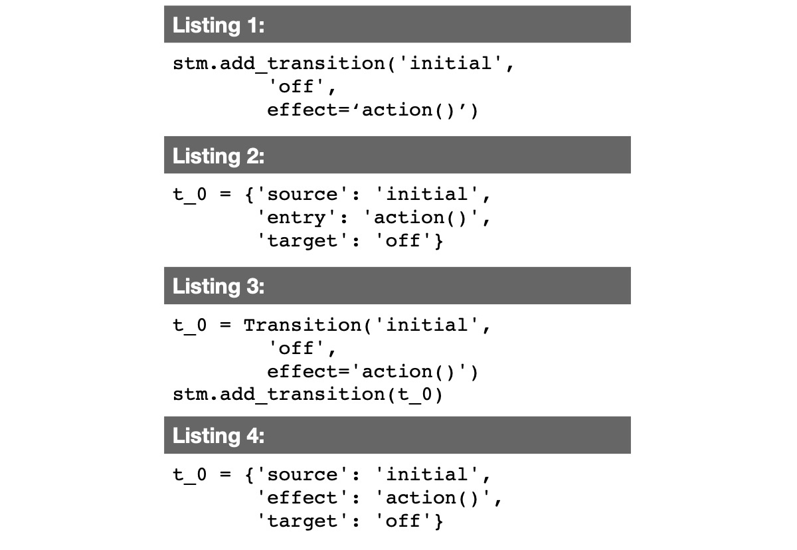
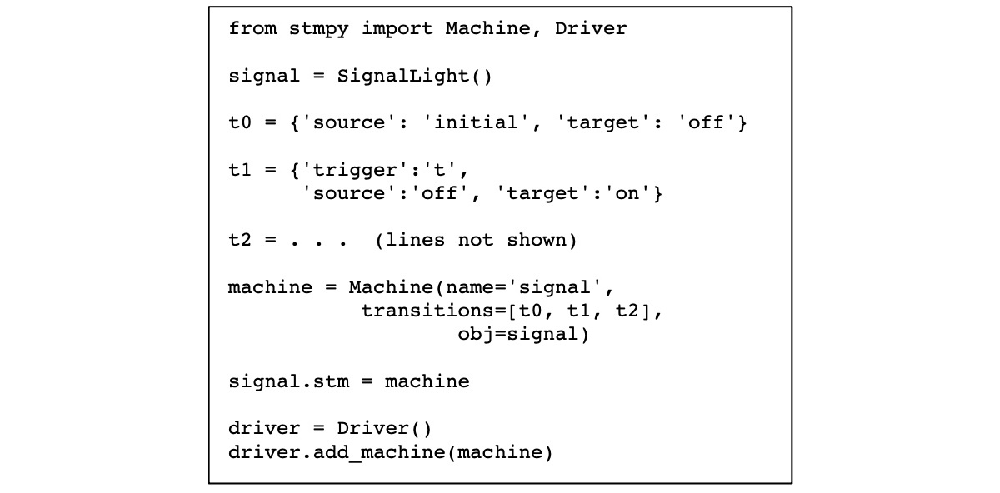

Question 1
What should happen if another system component wants to trigger a transition of a state machine?
- It adds a transition into the transition table.
- It sends a message to the driver of the state machine.
- It directly triggers the transition of the state machine by calling the transition method.
- It adds an event into the transition table.
Question 2
How are decisions in transitions implemented in STMPY?
- With a switch statement.
- With a compound transitions pointing to a Python function.
- With choice states and guards.
- With a decision table that includes choice pseudostates.
Question 3
Which relationship do the classes Machine and Driver have?
- One machine can have many parallel drivers.
- One machine object can run many driver objects.
- One driver object can run many machine objects.
- One driver object is associated with one machine object.
Question 4
How do we get the code for the state machines in STMPY?
- Code is generated automatically from the diagrams.
- Parts of the code are written manually, parts are generated.
- Models are interpreted, so that there is no need for code.
- Parts of the code are written manually, parts are provided by a library.
Question 5
Which of the code listings is correct to define a transition?
- Listing 3 is correct.
- Listing 2 is correct.
- Listing 4 is correct.
- Listing 1 is correct.

Question 6
Look at the following code. Why is nothing happening when you execute it?
- There is no initial transition.
- There is no initial state.
- The driver is not started.
- The machine is not started.

Question 7
A user presses a button, and this should trigger a transition. Which is the best solution?
- The press of the button sends a message into the state machine via the driver.
- The press of the button directly triggers a transition function.
- The state machine continuously checks whether the button has been pressed.
- The driver has built-in support for user interfaces.
Question 8
The preparation material named the term "traceability". What did it mean in this context?
- How diagram and code belong together.
- How behavior can be presented as traces.
- That state machines execute traces of behavior.
- The traces that the sequences of states leave behind.
Question 9
How are while-loops used in STMPY?
- All drivers share a single while-loop.
- A driver has a while-loop, serving all its state machines.
- Each state machine has its own while-loop.
- STMPY is implemented without while-loops.
Question 10
How do state machines break down the complexity of concurrent behavior?
- State machines efficiently assign programming statements to while-loops.
- State machines define events that are efficiently scheduled.
- State machines break down concurrent behavior into short pieces of behavior (the transitions) and execute them one at a time.
- State machines allow to run many programming threads at the same time.